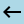

<div class="jumbotron">
    <h2 class="display-2 text-center text-white">Compare</h2>
    <hr style="background-color: orange; width: 50%;" class="text-center">
</div>
<div class="row">
    <div class="col col-md-3" style="padding-left: 3%;">
        <div class="expansion-container" *ngIf="this._stocks.getQuotes !== undefined; else emptyBlock">
            <div class="expansion-box" *ngFor="let quote of quotes">
                <mat-accordion multi>
                    <app-stock-panel [quote]="quote" [color]="getItemBoxColor" [execute]="changeBoxesOnClick" [flag]="flagForPanel" (panelChange)="processClick($event)"></app-stock-panel>
                </mat-accordion>
            </div>
        </div>
        <ng-template #emptyBlock>
            <div class="text-danger">No stocks added yet!</div>
        </ng-template>
        <div class="back-arrow" style="padding-left:22%">
            <a routerLink="/dash" class="back" style="color: lightblue;">
                 Back to Dash
            </a>
        </div>
    </div>
    <div class="col col-md-6">
        <!-- for centering:  d-flex justify-content-center-->
        <div class="comparisons" *ngIf="stockSymbolRetrieveError === false; else badSymbols;">
            <div class="compare-arrows">
                <mat-form-field appearance="fill" style="padding-right: 3%">
                    <input matInput [(ngModel)]="inputFilterLeft" autocomplete="off">
                    <mat-label>Select A Quote</mat-label>
                    <mat-select [(ngModel)]="selectBoxLeft">
                        <cdk-virtual-scroll-viewport itemSize="5" [style.height.px]=200>
                            <mat-option *cdkVirtualFor="let s of symbolsList | symbolFilter:inputFilterLeft" [value]="s">
                                {{s}}
                            </mat-option>
                        </cdk-virtual-scroll-viewport>
                    </mat-select>
                </mat-form-field>
                
                <mat-form-field appearance="fill" style="padding-left: 3%;">
                    <input matInput [(ngModel)]="inputFilterRight" autocomplete="off">
                    <mat-label>Select A Quote</mat-label>
                    <mat-select [(ngModel)]="selectBoxRight">
                        <cdk-virtual-scroll-viewport itemSize="5" [style.height.px]=200>
                            <mat-option *cdkVirtualFor="let s of symbolsList | symbolFilter:inputFilterRight" [value]="s">
                                {{s}}
                            </mat-option>
                        </cdk-virtual-scroll-viewport>
                    </mat-select>
                </mat-form-field>
                <div style="padding-left: 32%;">
                    <button class="btn btn-success" [disabled]="selectBoxLeft === undefined || selectBoxRight === undefined"
                 (click)="goCompare($event)">Go</button>
                </div>
                <app-earnings-display *ngIf="executionClick === true" [left]="selectBoxLeft" [right]="selectBoxRight"></app-earnings-display>
            </div>
        </div>
        <ng-template #badSymbols>
            <span class="text-danger">Error loading symbols</span>
        </ng-template>
    </div>
    <div class="col col-md-3" id="dividends-container" *ngIf="selectBoxLeft !== selectBoxRight">
        <app-dividends-panel [left]="selectBoxLeft" [right]="selectBoxRight"></app-dividends-panel>
    </div>
</div>
<div class="row">
    <div class="col col-md-8 offset-md-2">
        <div *ngIf="executionClick === true">
            <app-charts [left]="selectBoxLeft" [right]="selectBoxRight"></app-charts>
        </div>
    </div>
</div>
